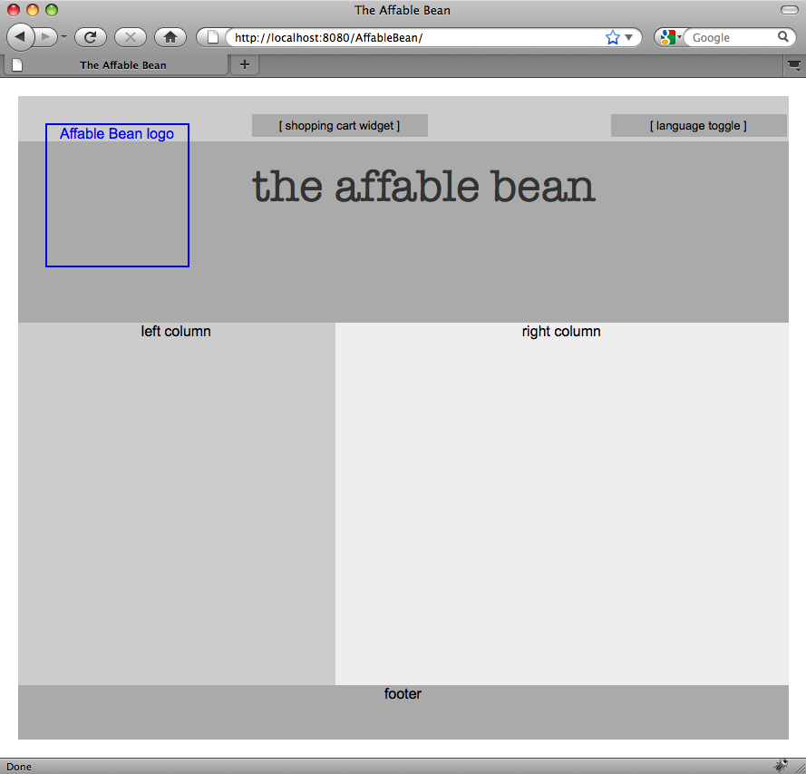
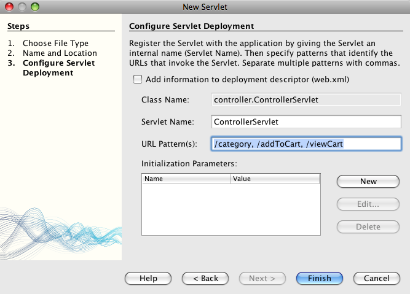

Apache NetBeans
Apache NetBeansLatest release
Учебный курс по электронной коммерции в NetBeans. Подготовка представлений страниц и сервлета Controller
| This tutorial needs a review. You can edit it in GitHub following these contribution guidelines. |
-
Подготовка представлений страниц и сервлета контроллера

Figure 1. Содержимое на этой странице применимо к IDE NetBeans, версиям 6.8 и 6.9
В учебном курсе показано создание файлов проекта в среде IDE и рассмотрены некоторые возможности, применяемые при работе с HTML и CSS. После создания необходимых файлов проекта, начните создание внешнего интерфейса приложения. Для этого поместите файлы JSP в нужные позиции в структуре проекта, создайте верхний и нижний колонтитулы, которые будут применяться ко всем представлениям, и создайте сервлет Controller для обработки входящих запросов.
Также в этой главе для приложения будет создан дескриптор веб-развертывания (файл web.xml). Дескриптор развертывания может использоваться для указания конфигурационной информации, считываемой сервером при развертывании. Хотя спецификации сервлетов версии 3.0, включенные в Java EE 6, позволяют использовать аннотации класса вместо XML, дескриптор развертывания, тем не менее, может потребоваться для настройки определенных элементов приложения. В этой главе в частности будут добавлены директивы для определения верхнего и нижнего колонтитулов и указания, к каким файлам они будут применяться.
Одна из целей этого учебного курса — создать страницы JSP, соответствующие представлениям, указанным в проекте приложения. В соответствии с макетами страниц и блок-схемой процесса, реализация макетов страниц начинается с создания заполнителей всех визуальных и функциональных компонентов. В этом учебном курсе приведено руководство по реализации макета главной страницы. Перечисленные ниже действия можно использовать для создания других страниц по своему усмотрению или можно загрузить снимок 1 проекта, на котором представлены макеты всех страниц.
Можно просмотреть интерактивную демонстрацию приложения, которое создается в этом учебном курсе: Демонстрация приложения электронной коммерции NetBeans
| Программное обеспечение или материал | Требуемая версия |
|---|---|
Набор Java, версия 6.8 или 6.9 |
|
версия 6 |
|
v3 или Open Source Edition 3.0.1 |
Примечания:
-
The IDE NetBeans requires the Java Development Kit (JDK) to run properly. Если указанные материалы не установлены, JDK следует загрузить и установить в первую очередь.
-
The IDE NetBeans Java Bundle includes Java Web and EE technologies, which are required for the application you build in this tutorial.
-
The IDE NetBeans Java Bundle also includes the GlassFish server, which you require for this tutorial. Можно загрузить сервер GlassFish отдельно, но версия, предоставляемая с NetBeans, имеет преимущество, так как автоматически зарегистрирована в среде IDE.
Создание файлов проекта
Для создания файлов проекта воспользуйтесь мастером создания файлов среды IDE. Вы можете нажать кнопку 'Создать файл' (  ), нажать Ctrl-N (⌘+N в Mac) или в окне 'Проекты' щелкните правой кнопкой мыши узел папку, в которой будет содержаться новый файл, и выберите папку 'Создать' > [тип_файла]. В следующих подразделах будут созданы страницы JSP и таблица стилей проекта.
), нажать Ctrl-N (⌘+N в Mac) или в окне 'Проекты' щелкните правой кнопкой мыши узел папку, в которой будет содержаться новый файл, и выберите папку 'Создать' > [тип_файла]. В следующих подразделах будут созданы страницы JSP и таблица стилей проекта.
Создание страниц JSP
Начните работу с создания страниц JSP, соответствующих представлениям, отображенным на блок-схеме.
Страница index.jsp, созданная средой IDE, станет главной страницей проекта. Создайте страницы JSP для оставшихся представлений и на время разместите их в корне проекта вместе с index.jsp.
-
Для открытия мастера создания файлов нажмите кнопку 'Создать файл' (
). -
Выберите категорию Web, затем элемент JSP и нажмите кнопку "Далее".
-
Введите имя файла “category”. Обратите внимание, что в поле "Местоположение" указано значение
Web Pages, означающее, что файл будет создан в корневом веб-узле проекта. Это соответствует папке проектаweb, что можно позже проверить в окне "Файлы" среды IDE. -
Нажмите кнопку "Завершить". В среде IDE создается и открывается в редакторе новая страница JSP.
-
Повторите действия 1 - 4 для создания оставшихся страниц
cart.jsp,checkout.jspиconfirmation.jsp.
После завершения окно "Проекты" выглядит следующим образом:

Figure 2. Представления содержатся в папке 'WEB-INF/view/'
Создание таблицы стилей
Создайте файл CSS, содержащий все стили приложения.
-
В окне 'Проекты' щелкните правой кнопкой мыши узел 'Веб-страницы' и выберите 'Создать' > 'Папка'.
-
В мастере создания новой папки назовите папку “css” и нажмите кнопку "Готово".
-
Щелкните правой кнопкой мыши папку
cssи выберите в меню "Создать" пункт "Каскадная таблица стилей". (Если пункта "Каскадная таблица стилей" нет, выберите "Прочее". В мастере создания файлов выберите категорию Web, затем "Каскадная таблица стилей" и нажмите кнопку "Далее".) -
Назовите таблицу стилей
affablebeanи нажмите кнопку "Готово".
После этого файл affablebean.css отображается в окне "Проекты".

Figure 3. В окне
Создание содержимого HTML и CSS
В этом разделе создаются представления страниц для соответствия предлагаемым макетам страниц. Они будут основой, к которой можно добавить динамическое содержимое на последующих стадиях разработки. Для этого используются редакторы HTML и CSS среды IDE, а также дополнительные окна поддержки CSS.
*Замечание о совместимости браузеров.*В этом учебном курсе используется браузер Firefox 3 и не гарантируется совместимость разметки страницы с другими современными браузерами. В реальности при работе с технологиями создания внешнего интерфейса (HTML, CSS, JavaScript) необходимо принимать меры для обеспечения корректного отображения веб-страниц во всех версиях браузеров, которые могут использоваться посетителями (как правило, Internet Explorer, Firefox, Safari, Chrome и Opera). При работе в среде IDE можно указать, в каком браузере должно открываться приложение. Выберите в меню "Сервис" пункт "Параметры" (в Mac OS — пункт "Параметры" в меню NetBeans) и под вкладкой "Общее" в окне "Параметры" выберите нужный браузер в выпадающем списке "Веб-браузер". Среда IDE обнаруживает браузеры, установленные в местоположении по умолчанию. Если установленный на компьютере браузер не отображается, нажмите кнопку "Правка" и зарегистрируйте браузер вручную.
Подготовка отображения веб-страниц, как правило, итерационный процесс, при котором требуется постоянная обратная связь с потребителем. Следующие действия демонстрируют средства среды IDE на примере макета главной страницы.
-
В окне 'Проекты' дважды щелкните
index.jsp, чтобы открыть его в редакторе. -
Вначале создайте теги
<div>для основных областей страницы. Можно создать пять тегов: четыре для основных областей (верхний и нижний колонтитулы, левый и правый столбец) и пятый, содержащий все остальные. Удалите весь текст внутри тегов<body>и замените его на следующий. Новый код показан полужирным шрифтом.
<body>
*<div id="main">
<div id="header">
header
</div>
<div id="indexLeftColumn">
left column
</div>
<div id="indexRightColumn">
right column
</div>
<div id="footer">
footer
</div>
</div>*
</body>-
Добавьте ссылку на таблицу стилей в заголовке страницы и измените текст заголовка.
<head>
<meta http-equiv="Content-Type" content="text/html; charset=UTF-8">
*<link rel="stylesheet" type="text/css" href="css/affablebean.css">*
<title>*The Affable Bean*</title>
</head>-
Откройте в редакторе таблицу стилей
affablebean.css. Вначале создайте правила для идентификаторов созданных тегов<div>.-
Для указания размеров областей используйте свойства
widthиheight. -
Чтобы отличать области при просмотре страницы, используйте свойство
background. -
Для горизонтального центрирования четырех областей на странице, можно добавить параметр
margin: 20px autoк правилуbody. (20pxотносится к верхнему и нижнему полю;autoсоздает равные промежутки слева и справа.) Затем добавьте параметрfloat: leftк левому и правому столбцу. -
В нижнем колонтитуле требуется параметр
clear: left, чтобы его верхняя граница отображалась после нижних границ выровненных влево и расположенных выше областей (т.е. левого и правого столбца).
-
body {
font-family: Arial, Helvetica, sans-serif;
width: 850px;
text-align: center;
margin: 20px auto;
}
#main { background: #eee }
#header {
height: 250px;
background: #aaa;
}
#footer {
height: 60px;
clear: left;
background: #aaa;
}
#indexLeftColumn {
height: 400px;
width: 350px;
float: left;
background: #ccc;
}
#indexRightColumn {
height: 400px;
width: 500px;
float: left;
background: #eee;
}-
Нажмите кнопку 'Запустить проект' (
 ) на главной панели инструментов IDE. Измененные файлы проекта автоматически сохраняются, код Java компилируется, проект упаковывается и развертывается в GlassFish, затем открывается браузер для просмотра текущего состояния страницы приветствия.
) на главной панели инструментов IDE. Измененные файлы проекта автоматически сохраняются, код Java компилируется, проект упаковывается и развертывается в GlassFish, затем открывается браузер для просмотра текущего состояния страницы приветствия.

Figure 4. Выполните проект для просмотра текущего состояния страниц
-
Теперь создайте заполнитель для компонентов страницы в каждой из четырех видимых областей. Начните с верхнего колонтитула. Согласно макету страницы приветствия, верхний колонтитул должен содержать следующие компоненты:
-
Логотип
-
Текст логотипа
-
Корзина покупок (элемент оформления)
-
Переключатель языка Внесите в файл
index.jspследующие изменения. Новый код отображается полужирным шрифтом.
-
<div id="header">
*<div id="widgetBar">
<div class="headerWidget">
[ language toggle ]
</div>
<div class="headerWidget">
[ shopping cart widget ]
</div>
</div>
<a href="#">
<img src="#" id="logo" alt="Affable Bean logo">
</a>
<img src="#" id="logoText" alt="the affable bean">*
</div>В этом коде элемент <div id="widgetBar"> будет содержать переключатель языков и корзину покупок.
Поддержка правки HTML в среде NetBeans
При работе в редакторе пользуйтесь поддержкой HTML среды IDE. В дополнение к обычной подсветке синтаксиса, позволяющей отличать друг от друга теги, атрибуты, значения атрибутов и текст, существует также много других возможностей.
При вводе тегов и атрибутов можно нажатием комбинации клавиш CTRL+ПРОБЕЛ вызывать автозавершение кода и документацию. Среда IDE отображает список предположений, из которого можно выбрать вариант, а также окно документации с определением выбранного элемента и примерами кода.

Figure 5. Для просмотра окон автозавершения кода и документации нажмите сочетание клавиш CTRL+ПРОБЕЛ.
При обнаружении ошибок в коде в среде IDE отображаются предупреждения, сообщения об ошибках и, в некоторых случаях, предположения. Предупреждения отображаются желтым цветом, а ошибки — красным. Можно навести указатель мыши на выбранную область для просмотра сообщения во всплывающем окне.

Figure 6. Наведите указатель мыши дляч просмотра подсказки с предупреждением
Также доступно множество комбинаций клавиш. Выберите в основном меню "Справка" пункт "Таблица сочетаний клавиш".
-
Создайте в таблице стилей правила для новых идентификаторов и классов. После правила
headerдобавьте следующие правила. Новый код отображается полужирным шрифтом.
#header {
height: 250px;
background: #aaa;
}
*#logo {
height: 155px;
width: 155px;
float: left;
margin-left: 30px;
margin-top: -20px;
}
#logoText {
float: left;
margin: 20px 0 0 70px;
/* font styles apply to text within alt tags */
font-family: 'American Typewriter', Courier, monospace;
font-size: 50px;
color: #333;
}
#widgetBar {
height: 50px;
width: 850px;
float: right;
background: #ccc;
}
.headerWidget {
width: 194px;
margin: 20px 2px;
font-size: small;
float: right;
line-height: 25px;
background: #aaa;
}*Для правила logo примените свойства margin-left и margin-top для указания позиции компонента на странице.
Если требуются сведения о свойствах в этом коде, поместите курсор на нужное свойство и нажмите комбинацию клавиш CTRL+ПРОБЕЛ для вызова всплывающего окна с документацией.

Figure 7. Нажмите Ctrl-Space в свойстве CSS для вызова поддержки документации
Чтобы увидеть, как свойство действует на страницу, можно закомментировать его и обновить страницу в браузере. Чтобы закомментировать наведите курсор на строку или выделите блок кода, а затем нажмите Ctrl-/ (⌘-/ в Mac).
-
Сохраните (Ctrl-S; ⌘-S в Mac) файлы
index.jspиaffablebean.css, затем перейдите к браузеру и обновите страницу для просмотра текущего состояния.
Примечание. Служебная программа 'Развертывать при сохранении' в IDE автоматически активируется для веб-проектов Java. Это означает, что при каждом сохранении файла, он автоматически компилируется (если это класс Java или страница JSP), и выполняется упаковывание и развертывание проекта на сервере. Поэтому при внесении изменений в HTML и CSS нет необходимости вручную перезапускать проект для просмотра обновленной версии в браузере. Просто сохраните файлы, перейдите к браузеру и обновите страницу.

Figure 8. Заполнители для заголовков отображаются при запуске проекта
В предыдущих действиях можно уловить закономерность. Для каждой области страницы выполняется три действия. 1. Создание структуры с помощью HTML. 2. Создание набора стилей для определения внешнего вида. 3. Просмотр страницы для анализа результатов этих изменений. Выполняя эти действия, реализуем компоненты в оставшихся областях.
-
Создайте заполнители для компонентов в правом столбце. В соответствии с макетом страницы приветствия, в правом столбце расположены четыре блока одинакового размера.
Создайте структуру четырех блоков. Вставьте следующий текст между тегами <div id="indexRightColumn">. Новый код отображается полужирным шрифтом.
<div id="indexRightColumn">
*<div class="categoryBox">
<a href="#">
<span class="categoryLabelText">dairy</span>
</a>
</div>
<div class="categoryBox">
<a href="#">
<span class="categoryLabelText">meats</span>
</a>
</div>
<div class="categoryBox">
<a href="#">
<span class="categoryLabelText">bakery</span>
</a>
</div>
<div class="categoryBox">
<a href="#">
<span class="categoryLabelText">fruit & veg</span>
</a>
</div>*
</div>-
Добавьте в файл
affablebean.cssправила стилей для новых классовcategoryBoxиcategoryLabelText. Новый код отображается полужирным шрифтом.
#indexRightColumn {
height: 400px;
width: 500px;
float: left;
background: #eee;
}
*.categoryBox {
height: 176px;
width: 212px;
margin: 21px 14px 6px;
float: inherit;
background: #ccc;
}
.categoryLabelText {
line-height: 150%;
font-size: x-large;
}*Поддержка CSS в среде NetBeans
Рассмотрим два окна, которые важно использовать при работе с таблицами стилей. Окно "Предварительный просмотр CSS" позволяет просмотреть правила стилей так, как они отображаются в браузере. Чтобы открыть это окно, выберите в главном меню "Окно" пункт "Прочее", затем "Предварительный просмотр CSS". Если поместить курсор внутри правила стиля в редакторе, пример текста в окне "Предварительный просмотр CSS" автоматически обновляется в соответствии с указанными в этом правиле свойствами.

Figure 9. Используйте 'Окно предварительного просмотра CSS' для просмотра визуализированных правил стилей
Окно "Конструктор стилей CSS" позволяет не набирать правила стилей вручную. Чтобы открыть это окно, выберите в главном меню "Окно" пункт "Прочее", затем "Конструктор стилей CSS". С помощью этого интерфейса можно создавать правила, выбирая свойства и значения в графическом интерфейсе.

Figure 10. Используйте 'Конструктор стилей CSS' для создания правил стилей
Так же как "Предварительный просмотр CSS", "Конструктор стилей CSS" синхронизирован с редактором. При выборе свойства в "Конструкторе стилей CSS" правило автоматически обновляется в редакторе. Аналогично, при внесении изменений в редакторе выбранные свойства в "Конструкторе стилей CSS" немедленно обновляются.
-
Сохраните (Ctrl-S; ?-S в Mac) файлы
index.jspиaffablebean.css, затем перейдите к браузеру и обновите страницу для просмотра текущего состояния.

Figure 11. Заполнители для заголовков и правого столбца отображаются при запуске проекта
-
В левом столбце и нижнем колонтитуле требуются заполнители только для статического текста, поэтому добавьте их одновременно.
Вставьте между тегами <div id="indexLefttColumn"> и <div id="footer"> следующий код. Новый код отображается полужирным шрифтом.
<div id="indexLeftColumn">
*<div id="welcomeText">
<p>[ welcome text ]</p>
</div>*
</div>
...
<div id="footer">
*<hr>
<p id="footerText">[ footer text ]</p>*
</div>-
Внесите изменения в таблицу стилей
affablebean.css. Нет необходимости учитывать все новые идентификаторы и классы, можно улучшить внешний вид позже, после получения от клиента текста и изображений.
Тег горизонтальной линии (<hr>) занимает всю ширину родительского элемента (<div id="footer"). Поэтому для изменения ширины линии в соответствии с макетом следует изменить ширину элемента <div id="footer">. Новый код отображается полужирным шрифтом.
#footer {
height: 60px;
*width: 350px;*
clear: left;
background: #aaa;
}
*hr {
border: 0;
background-color: #333;
height: 1px;
margin: 0 25px;
width: 300px;
}*-
Сохраните (Ctrl-S; ?-S в Mac) файлы
index.jspиaffablebean.css, затем перейдите к браузеру и обновите страницу для просмотра текущего состояния.

Figure 12. Отображаются заполнители для левого столбца и нижнего колонтитула
Страница приветствия готова. Созданы все необходимые заполнители для компонентов, которые будут добавлены на страницу.
Начальный дизайн страницы приветствия приложения выполнен. Созданы все заполнители для компонентов страницы. Позже в этом учебном курсе, когда будет применяться динамическая логика для представлений страниц, можно будет просто включить выражения JSTL и EL в эти заполнители.
Самостоятельно реализуйте начальный проект для остальных страниц в соответствии с макетами. Для этого следуйте шаблону:
-
Создайте теги
<div>для основных областей страницы. -
Для каждой области страницы выполните следующие действия:
-
Создание структуры с помощью HTML.
-
Создание набора стилей для определения внешнего вида.
-
Просмотр страницы для анализа результатов этих изменений.
-
Не забывайте использовать поддержку HTML и CSS среды IDE. Полезные советы Если требуется просто получить код для оставшихся страниц и продолжить выполнение учебного курса, можно загрузить снимок 1 ` проекта AffableBean`. Изображения начальной реализации макетов оставшихся страниц.
страница категории

Figure 13. Заполнители реализованы для страницы категории
страница корзины покупок

Figure 14. Заполнители реализованы для страницы корзины
страница проверки

Figure 15. Заполнители реализованы для страницы изъятия из использования
страница подтверждения

Figure 16. Заполнители реализованы для страницы изъятия из использования
Примечание. Фоновые цвета для всех областей страницы используются только для расположения элементов при разработке приложения. В конце следует удалить их из таблицы стилей и применить более подходящий цвет фона. Для этого измените правило background класса main:
#main { background: #f7f7e9 }Полезные советы
В редакторе среды IDE есть много полезных возможностей для эффективной работы. Изучение комбинаций клавиш и кнопок панели инструментов увеличит эффективность работы. Следующие советы относятся к правке файлов HTML и CSS. Для просмотра остальных комбинаций клавиш, откройте таблицу сочетаний клавиш среды IDE, выбрав в основном меню "Справка" пункт "Таблица сочетаний клавиш".
-
Автозавершение кода. При вводе тегов и атрибутов во всплывающем окне автоматически отображаются предположения. Нажатие клавиши ВВОД завершает выбранный тег.
-
Форматирование кода. Щелкните правой кнопкой мыши в редакторе и выберите пункт "Формат".
-
Переключение номеров строк. Щелкните правой кнопкой мыши в левом поле редактора и выберите команду "Показать номера строк".
-
Найти вхождения: Выделите блок текста и нажмите Ctrl-F (⌘-F в Mac). Все вхождения текста подсвечиваются в редакторе. Для переключения выделения нажмите кнопку 'Переключение выделения при поиске' (
 ) (Ctrl-Shift-H) на панели инструментов редактора.
) (Ctrl-Shift-H) на панели инструментов редактора. -
Создание закладки. Нажмите кнопку 'Переключение закладок' ( ) (Ctrl-Shift-M) для создания закладки в левом поле редактора. Независимо от положения в файле можно перейти к закладке нажатием кнопок "Предыдущая закладка"/"Следующая закладка" на панели инструментов редактора.
-
*Копирование фрагментов кода вверх или вниз*Выделите фрагмент кода и нажмите комбинацию клавиш CTRL+SHIFT+СТРЕЛКА ВВЕРХ/СТРЕЛКА ВНИЗ.
-
Выделение открывающих и закрывающих тегов. Поместите курсор на открывающий или закрывающий тег, и оба тега будут подсвечены желтым.
Размещение страниц JSP в папке WEB-INF
В соответствии с созданными макетами страниц, страница приветствия всегда должна выглядеть одинаково для всех посетителей. Это означает, что содержимое страницы приветствия не зависит от сеанса пользователя. (Сеансы рассматриваются в главе 8, Управление сеансами.) Обратите внимание, что всем остальным страницам для верного отображения требуется информация, зависящая от пользователя. Например, на странице категории требуется, чтобы пользователь выбрал категорию для отображения, а на странице корзины требуется информация о добавленных пользователем в корзину покупок элементах. Эти страницы не будут отображаться верно, если сервер не свяжет информацию, зависящую от пользователя, с входящим запросом. Поэтому нужно избежать прямого запроса этих страниц путем ввода их адреса в адресной строке браузера. Для этой цели можно использовать папку проекта WEB-INF: все ресурсы, содержащиеся в папке WEB-INF недоступны из браузера напрямую.
Создайте папку view и поместите ее в папку WEB-INF. Затем переместите все страницы JSP, кроме страницы приветствия, в эту папку.
-
В окне 'Проекты', щелкните правой кнопкой мыши узел WEB-INF и выберите 'Создать' > 'Папка'.
-
В мастере создания папки введите название
viewи нажмите кнопку "Готово". Обратите внимание, что созданная папка отображается в окне "Проекты". -
Переместите страницы
category.jsp,cart.jsp,checkout.jspиconfirmation.jspв папкуview.
Для этого щелкните файл cart.jsp для его выбора, затем, удерживая нажатой клавишу SHIFT, щелкните файл confirmation.jsp. При этом будут выделены четыре файла. Когда эти файлы выделены, щелкните их и перетащите в папку WEB-INF/view.

Figure 17. Щелкните и перетащите страницы JSP в папку 'WEB-INF/view/'
Для демонстрации того, что эти страницы более недоступны из браузера, нажмите кнопку 'Запустить проект' ( ) для запуска проекта. После отображения приложения в браузере введите полный путь к одному из этих файлов в строке адреса. Например, введите адрес:
http://localhost:8080/AffableBean/WEB-INF/view/category.jspВы получите статус HTTP 404, означающий, что ресурс недоступен.
Создание верхнего и нижнего колонтитула
Как видно из макетов страниц, у всех пяти представлений есть общее содержание. В верхней части все они содержат логотип компании, переключатель языков и другие элементы оформления, связанные с корзиной покупок. В нижней части они содержат текст о политике конфиденциальности и ссылки на контакты. Вместо того, чтобы включать этот код в исходные файлы всех страниц, можно выделить его в два фрагмента JSP: верхний и нижний колонтитулы. Затем можно включить файлы фрагментов в представления страниц в нужных позициях.
Для этих фрагментов создайте новую папку jspf, расположенную в папке WEB-INF.
-
В окне 'Проекты', щелкните правой кнопкой мыши узел WEB-INF и выберите 'Создать' > 'Папка'.
-
В мастере создания папки введите имя
jspfи нажмите кнопку "Готово".
Поведение элементов меню среды IDE часто зависит от контекста. Например, при щелчке правой кнопкой мыши узла WEB-INF когда отображен мастер создания папок, web/WEB-INF был автоматически введен в поле 'Родительская папка'. Точно так же, при щелчке правой кнопкой мыши узла в окне 'Проекты' и выборе 'Создать', список типов файлов частично определяется предыдущими выборками.
-
Создайте два сегмента JSP:
header.jspfиfooter.jspf. Для этого щелкните правой кнопкой мыши новую созданную папкуjspfи выберите 'Создать' > JSP. В мастере создания JSP введите имя файла и под надписью "Параметры" выберите параметр "Создать как сегмент JSP", затем нажмите кнопку "Готово".
После этого в окне "Проекты" отображаются файлы header.jspf и footer.jspf:

Figure 18. В проекте отображаются фрагменты JSP нижнего и верхнего колонтитулов
Теперь можно скопировать код верхнего колонтитула из любой страницы JSP и вставить его в файл header.jspf. Аналогично, можно скопировать текст нижнего колонтитула из любой страницы JSP и вставить его в файл footer.jspf. После этого можно удалить код верхнего и нижнего колонтитулов из всех страниц JSP.
-
Скопируйте код верхнего колонтитула из любой страницы JSP и вставьте его в файл
header.jspf. Верхний колонтитул должен включать описатель типа документа и открывающие теги<html>,<head>и<body>и текст до закрывающего тега элемента<div id="header">. Убедитесь, что добавлены заполнители для элементов, используемых в верхней части представлений страниц: корзины покупок, переключателя языков и кнопки "Переход к проверке". После вставки кода в файлheader.jspf, он будет выглядеть следующим образом:
<%@page contentType="text/html" pageEncoding="UTF-8"%>
<!DOCTYPE HTML PUBLIC "-//W3C//DTD HTML 4.01 Transitional//EN"
"http://www.w3.org/TR/html4/loose.dtd">
<html>
<head>
<meta http-equiv="Content-Type" content="text/html; charset=UTF-8">
<link rel="stylesheet" type="text/css" href="css/affablebean.css">
<title>The Affable Bean</title>
</head>
<body>
<div id="main">
<div id="header">
<div id="widgetBar">
<div class="headerWidget">
[ language toggle ]
</div>
<div class="headerWidget">
[ checkout button ]
</div>
<div class="headerWidget">
[ shopping cart widget ]
</div>
</div>
<a href="#">
<img src="#" id="logo" alt="Affable Bean logo">
</a>
<img src="#" id="logoText" alt="the affable bean">
</div>-
Скопируйте код нижнего колонтитула из любой страницы JSP и вставьте его в файл
footer.jspf. Код нижнего колонтитула должен включать в себя элемент<div id="footer">и текст до закрывающего тега<html>. После вставки кода в файлfooter.jspfон будет выглядеть следующим образом:
<div id="footer">
<hr>
<p id="footerText">[ footer text ]</p>
</div>
</div>
</body>
</html>-
Удалите код верхнего и нижнего колонтитулов из всех пяти страниц JSP (
index.jsp,category.jsp,cart.jsp,checkout.jspиconfirmation.jsp).
Добавление директивы к дескриптору развертывания
В настоящий момент представления размещены правильным образом и общий код колонтитулов выделен в файлы header.jspf и footer.jspf. По-прежнему не указано, к каким страницам относятся верхний и нижний колонтитулы. К каждому представлению страницы можно добавить теги <jsp:include>. Однако это приведет только к дублированию кода, которое требовалось устранить. В качестве альтернативы можно создать дескриптор развертывания web.xml и добавить директиву "Группа свойств JSP" для указания, к каким страницам относятся фрагменты верхнего и нижнего колонтитула.
-
Нажмите сочетание клавиш CTRL+N (⌘-N на компьютере Mac) для открытия мастера создания файлов. Выберите категорию Web, затем выберите тип файла "Стандартный дескриптор развертывания (web.xml)".
-
Нажмите кнопку "Далее". Обратите внимание, что файл называется
web.xml, и будет помещен в папкуWEB-INFпроекта после завершения работы мастера. -
Нажмите кнопку "Завершить". Файл
web.xmlсоздается и добавляется в проект. В редакторе открывается графический интерфейс среды IDE для дескриптора развертывания.
Интерфейс разбит на категории в соответствии в областями, которые могут быть настроены в веб-приложении. Эти области (например, "Сервлеты", "Фильтры","Ссылки" и "Безопасность") отображаются на панели инструментов редактора как вкладки. На вкладке XML отображается весь исходный код файла. При любых изменениях, сделанных в графическом интерфейсе, исходный код дескриптора развертывания немедленно обновляется. В этом можно убедиться, открыв вкладку XML. Выполните следующие действия.
-
Выберите вкладку "Страницы", затем нажмите кнопку "Добавить в группу свойств JSP". Открывается диалоговое окно "Добавление группы свойств JSP".
-
Введите в поле "Описание" текст “header and footer settings”. Оставьте поле "Отображаемое имя" пустым. Поля "Отображаемое имя" и "Описание" являются необязательными для заполнения.
-
В поле "Шаблоны URL" введите пути к пяти представлениям. Введите “/index.jsp” и “/WEB-INF/view/”. Разделите эти два пути запятой. (Символ “” — это подстановочный знак, обозначающий все файлы в данной папке.)

Figure 19. Используйте диалоговое окно 'Добавить группу свойств JSP', чтобы указать теги <jsp-config> в дескрипторе развертывания
-
Нажмите кнопку "ОК". В категорию "Группа свойств JSP" на вкладке "Страницы" добавляется запись.
-
Переключитесь обратно на вкладку XML. Обратите внимание, что в дескриптор развертывания добавился следующий код.
<jsp-config>
<jsp-property-group>
<description>header and footer settings</description>
<url-pattern>/index.jsp</url-pattern>
<url-pattern>/WEB-INF/view/*</url-pattern>
</jsp-property-group>
</jsp-config>Примечание. Может потребоваться добавление символа возврата каретки к коду, чтобы он отображался на нескольких строках. Можно щелкнуть правой кнопкой мыши в редакторе и выбрать 'Формат' (Alt-Shift-F, Ctrl-Shift-F на Mac), чтобы задать для код правильные отступы.
-
Переключитесь снова на вкладку "Страницы" и введите в поля "Включить вводные части" и "Включить заключительные части" пути к файлам
header.jspfиfooter.jspfсоответственно. Можно нажать кнопку "Обзор" и выбрать файлы в диалоговом окне.

-
Переключитесь обратно на вкладку XML. Обратите внимание, что добавился следующий код. (Изменения выделены полужирным шрифтом.)
<jsp-config>
<jsp-property-group>
<description>header and footer settings</description>
<url-pattern>/index.jsp</url-pattern>
<url-pattern>/WEB-INF/view/*</url-pattern>
*<include-prelude>/WEB-INF/jspf/header.jspf</include-prelude>
<include-coda>/WEB-INF/jspf/footer.jspf</include-coda>*
</jsp-property-group>
</jsp-config>Эти директивы означают, что для всех файлов, расположенных по указанным шаблонам путей, файл`header.jspf` будет добавлен в начало, а файл footer.jspf добавлен в конец.
Определения этих и остальных доступных в дескрипторе веб-развертывания тегов приведены в Спецификации сервлетов.
-
Выполните приложение повторно (нажмите клавишу F6; комбинацию клавиш fn+F6 в Mac OS). Код верхнего и нижнего колонтитулов уже удален из файла`index.jsp`, поэтому при запросе этого файла можно убедиться, что код автоматически добавляется.
Страница приветствия отображается как ранее, включая содержимое верхнего и нижнего колонтитулов.
Создание сервлета Controller
Сервлет Controller обрабатывает входящие запросы, запуская необходимые для создания модели действия и перенаправляя запрос соответствующему представлению. Визуальное представление приведено на диаграмме MVC для проекта AffableBean.
Мастер создания сервлета среды IDE позволяет определить компонент сервлета веб-приложения с помощью аннотации @WebServlet в создаваемом классе или с помощью добавления необходимых директив в дескриптор развертывания. Далее класс ControllerServlet будет создан и определен в контексте приложения с помощью аннотации `@WebServlet`.
-
В окне 'Проекты', щелкните правой кнопкой мыши узел проекта
AffableBeanи выберите 'Создать' > 'Сервлет'. -
В мастере введите в поле "Имя класса"
ControllerServlet. -
В поле "Пакет", введите
controller. (Пакет автоматически создается после завершения работы мастера.)

Figure 20. Используйте мастер создания сервлетов для создания сервлетов для проекта
-
Нажмите кнопку "Далее". На третьем экране мастера можно настроить сервлет. Наиболее значимыми являются шаблоны URL-адресов, которые требуется указать. Эти шаблоны определяют URL-адреса, по которым выполняется сервлет. Например, если ввести “/category”, сервлет будет обрабатывать запросы следующего вида.
http://localhost/AffableBean*/category*Шаблоны URL-адресов должны соответствовать представлениям и действиям пользователя. В соответствии с макетом страницы приветствия, пользователь должен иметь возможность выбрать категорию. Поэтому можно связать URL-адрес /category с действием нажатия изображения категории. Аналогично, на странице категории пользователи должны иметь возможность добавить элемент в корзину покупок. Поэтому можно указать URL-адрес /addToCart.
-
В поле "Шаблоны URL-адресов" введите
/category, /addToCart, /viewCart. Шаблоны разделяются запятыми. Можно создать дополнительные шаблоны непосредственно в классе сервлета после его создания.

Figure 21. Настройте развертывание сервлета напрямую в мастере
-
Нажмите кнопку "Завершить".
ControllerServletсоздается в среде IDE и открывается в редакторе. Сервлет и шаблоны URL-адресов включены в аннотацию@WebServlet, расположенную перед сигнатурой класса.
*@WebServlet(name="ControllerServlet", urlPatterns={"/category", "/addToCart", "/viewCart"})*
public class ControllerServlet extends HttpServlet {Если выбрать на предыдущем шаге параметр “Добавить сведения в дескриптор развертывания (web.xml)”, вместо этого была бы создана такая разметка в файле приложения web.xml.
<servlet>
<servlet-name>ControllerServlet</servlet-name>
<servlet-class>controller.ControllerServlet</servlet-class>
</servlet>
<servlet-mapping>
<servlet-name>ControllerServlet</servlet-name>
<url-pattern>/category</url-pattern>
</servlet-mapping>
<servlet-mapping>
<servlet-name>ControllerServlet</servlet-name>
<url-pattern>/addToCart</url-pattern>
</servlet-mapping>
<servlet-mapping>
<servlet-name>ControllerServlet</servlet-name>
<url-pattern>/viewCart</url-pattern>
</servlet-mapping>-
Добавьте остальные шаблоны URL-адресов прямо в аннотацию
@WebServletв элементurlPatterns. В приложении требуются шаблоны URL-адресов для остальных действий и представлений. Можно ввести следующие шаблоны:-
/updateCart -
/checkout -
/purchase -
/chooseLanguageЗапишите шаблоны через запятую. Также можно переформатировать аннотацию таким образом:
-
@WebServlet(name="ControllerServlet",
urlPatterns = {"/category",
"/addToCart",
"/viewCart"*,
"/updateCart",
"/checkout",
"/purchase",
"/chooseLanguage"*})-
Наконец, добавьте элемент
loadOnStartup, чтобы экземпляр сервлета создавался и инициализировался при развертывании приложения. Для этого задайте значение0или большее (по умолчанию используется значение-1).
@WebServlet(name="ControllerServlet",
*loadOnStartup = 1,*
urlPatterns = {"/category",
"/addToCart",
"/viewCart",
"/updateCart",
"/checkout",
"/purchase",
"/chooseLanguage"})Реализация сервлета Controller
Сервлет Controller обрабатывает входящие запросы, запуская необходимые для создания модели действия и перенаправляя запрос соответствующему представлению. Визуальное представление приведено на диаграмме MVC для проекта AffableBean.
Открыв созданный код для поиска нового ControllerServlet, можно заметить, что шаблон сервлета IDE использует метод processRequest, который вызывается как методом doGet, так и doPost. (Возможно, потребуется расширить свертывание кода, щелкнув значок плюса (  ) в левом поле редактора, чтобы просмотреть эти методы). Поскольку приложение проводит различие между
) в левом поле редактора, чтобы просмотреть эти методы). Поскольку приложение проводит различие между doGet и doPost, код добавляется прямо в эти методы и полностью исключается из метода processRequest.
Изменение шаблонов файлов с помощью диспетчера шаблонов среды IDE
Среда IDE предоставляет простой шаблон для каждого создаваемого файла. Если шаблон не соответствует вашим рабочим шаблонам, можно изменить его в диспетчере шаблонов среды IDE. В среде IDE есть шаблоны практически для каждого типа файлов.
Например, для изменения шаблона сервлета выполните следующие действия:
-
Откройте диспетчер шаблонов, выбрав в главном меню "Сервис" пункт "Шаблоны".
-
Разверните категорию Web, затем выберите шаблон "Сервлет".

Figure 22. Доступ и изменение шаблонов файлов с помощью диспетчера шаблонов
-
Нажмите кнопку "Открыть в редакторе".
-
Измените шаблон в редакторе. При следующем создании нового сервлета (например, с помощью мастера создания сервлетов), будет применена новая версия.
После связывания шаблонов URL-адресов в сервлетом с помощью аннотации @WebServlet, настройте ControllerServlet для обработки этих шаблонов. Также создайте экземпляр RequestDispatcher для перенаправления запроса к соответствующему представлению.
-
Замените код шаблона класса
ControllerServletна следующий.
public class ControllerServlet extends HttpServlet {
/**
* Handles the HTTP <code>GET</code> method.
* @param request servlet request
* @param response servlet response
* @throws ServletException if a servlet-specific error occurs
* @throws IOException if an I/O error occurs
*/
@Override
protected void doGet(HttpServletRequest request, HttpServletResponse response)
throws ServletException, IOException {
String userPath = request.getServletPath();
// if category page is requested
if (userPath.equals("/category")) {
// TODO: Implement category request
// if cart page is requested
} else if (userPath.equals("/viewCart")) {
// TODO: Implement cart page request
userPath = "/cart";
// if checkout page is requested
} else if (userPath.equals("/checkout")) {
// TODO: Implement checkout page request
// if user switches language
} else if (userPath.equals("/chooseLanguage")) {
// TODO: Implement language request
}
// use RequestDispatcher to forward request internally
String url = "/WEB-INF/view" + userPath + ".jsp";
try {
request.getRequestDispatcher(url).forward(request, response);
} catch (Exception ex) {
ex.printStackTrace();
}
}
/**
* Handles the HTTP <code>POST</code> method.
* @param request servlet request
* @param response servlet response
* @throws ServletException if a servlet-specific error occurs
* @throws IOException if an I/O error occurs
*/
@Override
protected void doPost(HttpServletRequest request, HttpServletResponse response)
throws ServletException, IOException {
String userPath = request.getServletPath();
// if addToCart action is called
if (userPath.equals("/addToCart")) {
// TODO: Implement add product to cart action
// if updateCart action is called
} else if (userPath.equals("/updateCart")) {
// TODO: Implement update cart action
// if purchase action is called
} else if (userPath.equals("/purchase")) {
// TODO: Implement purchase action
userPath = "/confirmation";
}
// use RequestDispatcher to forward request internally
String url = "/WEB-INF/view" + userPath + ".jsp";
try {
request.getRequestDispatcher(url).forward(request, response);
} catch (Exception ex) {
ex.printStackTrace();
}
}
}Продолжив работу с учебным курсом, вы вернётесь к ControllerServlet и реализуете каждый из сопоставленных шаблонов URL-адреса отдельно.
-
Рассмотрим этот код. Следует обратить внимание на следующие моменты:
-
Сервлет использует переменную экземпляра
userPathдля получения запрошенного шаблона URL-адреса от клиента:
-
String userPath = request.getServletPath();userPath используется как методом doGet, так и doPost.
* Шаблоны URL-адресов связаны в первую очередь с запросом страниц и управляются методом doGet. Например, запросы /category, /viewCart и /checkout соответственно приведут к отображению страниц категории, корзины покупок и проверки.
* Шаблоны URL-адресов. связанные с отправкой форм и передачей конфиденциальной информации пользователей (например,, /addToCart, /updateCart и /purchase) управляются методом doPost.
* Как для метода doGet, так и для doPost, путь к соответствующему виду формируется с использованием строки адреса url.
String url = "/WEB-INF/view" + userPath + ".jsp";-
RequestDispatcherполучается изHttpServletRequestи используетurlдля перенаправления запроса:
request.getRequestDispatcher(url).forward(request, response);-
Примечания
TODOиспользуются для обозначения работы, которую предстоит выполнить. Например:
// if category page is requested
if (userPath.equals("/category")) {
// TODO: Implement category requestПрименение примечаний TODO в коде — полезный способ отслеживать задания, которые предстоит выполнить. Можно использовать окно 'Задачи' среды IDE (Ctrl-6; ⌘-6 в Mac), чтобы просмотреть все заметки TODO, а также любой синтаксис или ошибки компиляции, содержащиеся в проекте.

Figure 23. Отслеживание задач реализации в окне 'Задачи' среды IDE
Можно управлять ключевыми словами, отображаемыми в окне "Задачи". Откройте окно "Параметры" (в меню "Сервис" пункт "Параметры"; меню NetBeans, пункт "Параметры" в Mac OS), затем выберите "Разное" > "Задания".
-
Выполните проект (нажмите клавишу F6; fn+F6 в Mac OS) и проверьте, что
ControllerServletперенаправляет запросы соответствующим представлениям.-
Введите в строке адреса браузера
http://localhost:8080/AffableBean/category. Отображается страница категории приложения. -
Введите в строке адреса браузера
http://localhost:8080/AffableBean/viewCart. Отображается страница корзины покупок. -
Введите в строке адреса браузера
http://localhost:8080/AffableBean/checkout. Отображается страница проверки приложения.
-
Примечание. Ввод http://localhost:8080/AffableBean/purchase в адресной строке браузера не обеспечивает разрешения для просмотра страницы подтверждения. Это происходит потому, что шаблон URL-адреса /purchase управляется методом doPost сервлета, а запрос формы отправки из адресной строки браузера обычно посылается с помощью метода HTTP GET.
В настоящий момент созданы страницы JSP, содержащие заполнители для всех функциональных компонентов. Также создана структура внешнего интерфейса приложения. Страницы JSP теперь расположены в папке WEB-INF, верхний и нижний колонтитулы выделены в отдельные файлы, дескриптор развертывания настроен и для обработки входящих запросов создан ControllerServlet. В следующей главе учебного курса будет создано подключение приложения к базе данных.
Если требуется сравнить результаты выполнения этой главы с образцом, загрузите снимок 2 проекта AffableBean.
link:/about/contact_form.html?to=3&subject=Feedback: NetBeans E-commerce Tutorial - Preparing the Page Views and Controller Servlet[Мы ждем ваших отзывов]